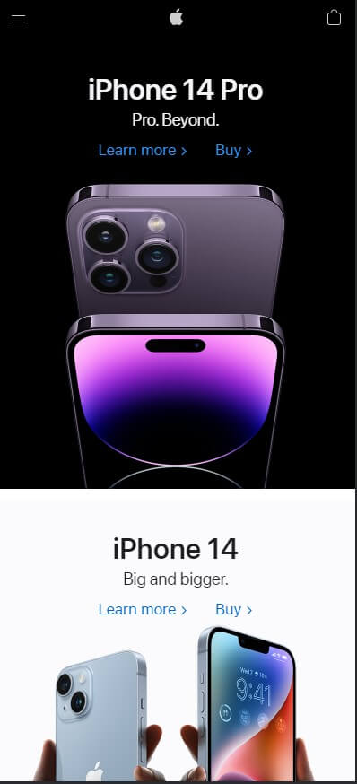

Contrast
Apple
In this picture, we see that Apple uses contrast very well. There is a black background in the first picture with white lettering and then a white background in the second with black lettering. I also find that my eyes are drawn to the brilliant shade of pink/purple that pops out against the black. The "Learn more" and "Buy" buttons are also easy to see because of their color and the same fonts and colors on both pictures keeps the cohesiveness.
Heirarchy
Unity
Unity uses heirarchy to encourage you to download their product. You first notice the colorful background with a large header that seems to have the answer to fulfilling your dream. The "download unity" button is large (following Fitt's Law) with good contrast and seems like the next logical thing that any rational person who wants to "bring [their] vision to life" would click on. Then there are 3 smaller-fonted, but still noticeable because of the contrast, reasons that tell you why Unity is a good choice. The sizing of the top compared to the sizing of the bottom part makes your eye first focus on the top and then as things get smaller your eyes travel down.
Rule of Thirds
Byu-Idaho
BYU-Idaho's pictures on this picture of the website have all followed the Rule of Thirds. The first picture of the girl and the second of the graduate both have her eyes along the top gridline and her body is centered over the right gridline. The building in the third is centered along the right gridline. All 3 of these pictures cause your eyes to see the focal point first and then because they are not dab-smack in the middle your eyes look at what else is in the picture or the screen. For example, there is a play button near the graduate girl that you don't notice right away.